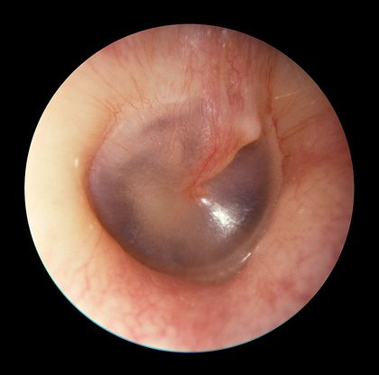

Swipe sideways to see all of it. Schematic, not to scale. Right ear seen through an otoscope: the front of the head is on your right, the top at the top.

Swipe sideways to see all of it. Schematic, not to scale. Right middle ear seen from the lateral side (tympanic membrane removed), as the 3D "Right" view: the front is on your right.
Swipe sideways to see all of it. Schematic, not to scale. Right eye, horizontal section seen from above: the front at the top, the nasal side on your left, the temporal side on your right.
Swipe sideways to see all of it. Schematic pathway, not anatomical positions.
Swipe sideways to see all of it. Schematic, not to scale. Right eye seen from the front, as the 3D "Front" view: the lateral side on your left, the nose on your right.
Swipe sideways to see all of it. Schematic, not to scale. Coronal section seen from the front: the patient's right is on your left. Visual fields as the patient sees them (each eye's temporal field on the outside).
Spotted a mistake, or something unclear? Report it: a short form on GitHub, with this page already filled in. No GitHub account? Sign up in a few seconds with your Google account. Signing in keeps out spam, and every report is checked against our sources, so your fix helps everyone. Reports are public: please don't include personal details.